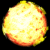
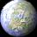
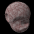

- Uses real gravity equations to compute planets motion.
- Plenty of physical and display parameters to play with.
- Ray-traced planets make it look good.
- Realtime numeric information (planets mass, speed...).
Gravitation rated (4 stars) at 
You will find on this page support for Gravitation screen saver.
Gravitation is yet another screen saver for your PC under Windows 95, 98 or NT.
What does make different is :
Gravitation rated (4 stars) at 
The 5.0 release bring to you:
Click here to download latest version (1.34 Mb). You will download a zip file containing the install/uninstall program for Gravitation.
This install program contains the screen saver program and 2 skin files ( Summer and Renaissance, see Skin files section ).
This program is shareware, you can freely install it and test it. If you decide to keep it, you must buy the registered version. See the "How to order" to know what are the benefits of the registered version.
Click on the thumbnails to display the screen shots. Click on the left menu to come back to this page.
This is the configuration windows. See how many parameters you can play with. Don't worry, there is a "Default parameters" button:
Standard pictures, a young star system was generated with several asteroids, comets and planets orbiting a star:
This sampe shows realtime numerical information about the simulation:
Go to the skin file section to see how Gravitation's look can be customized without changing the gravity equation.
Sample objects actually used by Gravitation. Animations are transposed to GIF animated images for browser convenience. They may be less smooth than the actual animation, depending on your browser:
| A star |  | ||
| A giant planet |  |
||
| An earth like planet |  | ||
| A moon | |
||
| An asteroid |  | ||
Registered users can use parameter files to tune Gravitation. These files allows you to individually place all the planets ( with the shareware you can only get randomly placed planets ).
You can specify the initial position and speed of each planet. Or you can place a planet at a given distance from another one and say 'I want this planet to orbit around that planet'.
Click here to open the parameter files page. (to be constructed).
Registered and shareware users can use skin files to customize the screen saver look. You can use these sample files or create your own pictures. Any object you will use will move according the gravity laws, only the look is changed. These screenshots have been reduced to optimize the download of this page. The two following skins are included with the installation program.
Renaissance skin file.
Beach skin file.

Download the file, extract it into the directory of you choice ( the description file and the bitmap files should be in the same directory ).
Gravitation is a shareware program. You can freely download it and test it. You can also distribute it ( just let me know by a simple e-mail ).
If you like this program and want to use it you must get the registered version. You will gain:
You can get the registered version by sending $15 or ( 75FF ) to:
You can send me bank checks, bank notes, money order, whatever you like.
Don't forget to join your personal lock key ( get it from the configuration window, it's something like [xxxx]-(yyyy)-{zzzz} ) and your e-mail address. I will send your unlock key as soon as I receive your letter. You will not need to reinstall the software, just enter your unlock key in the configuration window.
- On this page, find some other screen savers I wrote (to be constructed )
- A free program that will allow you to immediatly launch or configure a screen saver from the tray bar. (to be constructed )
- A free utility that will allow you to create the single bitmap from several planet phases. Create all images for your planet animation. Drag them to this utility. Copy and paste them to your favorite bitmap editor as a single bitmap. (to be constructed)
e-mail: lpi@geocities.com
Sorry I didn't place a link. That's because spammers parse the HTML code for 'mailto' tags and send me lots of junk e-mail. Just copy and paste my address to your mail program.
Now if you click on the following banner, I will get 15 cents ( and you will not get anything ! ).
Last updated: 28/09/99
You are visitor
{kind=link}